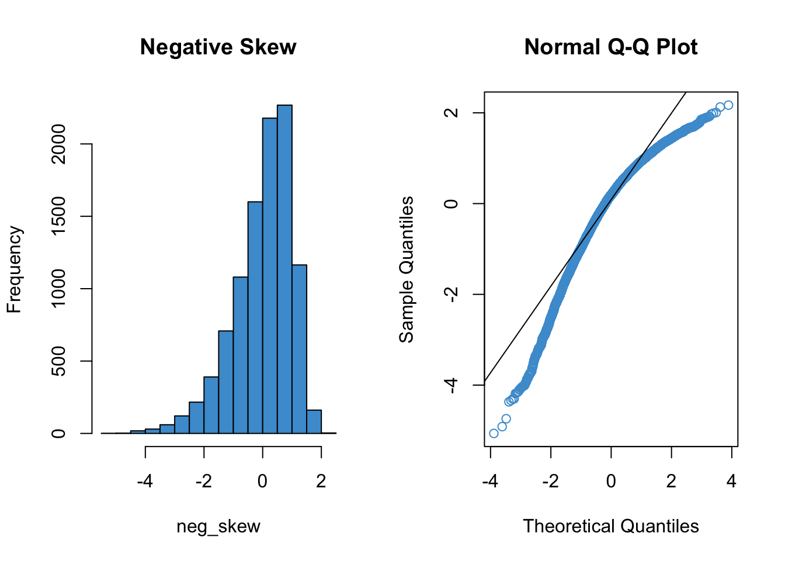
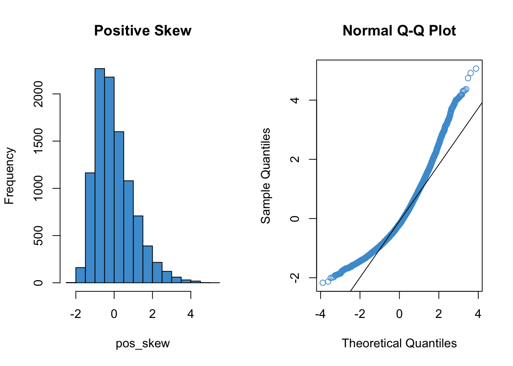

7 Assumption checking
In Section 2.5 we introduced the population model for linear regression. But how do we know whether this model applies to our data? That is the question we address in this chapter. In particular, we discuss data analyses that can be used to better understand whether the assumptions made when defining the population model for linear regression are consistent with our data. This is referred to assumption checking.
The three assumptions are (don’t worry, we review them again in the next section):
- Normality of residuals
- Homoskedasticity of residuals
- Linearity of the conditional mean (regression) function
Why do we care about these assumptions? Well, if all of the population assumptions of linear regression are not met, any of the following can happen:
- Regression coefficients and R-squared could be biased
- Standard errors could be too small (or too large)
- t- and F-tests could be too small (or too large)
- p-values could be too small (or too large)
- Confidence intervals could be too small (or too large)
Basically, all of the numbers we get in R’s summary(lm) output could be wrong.
The interpretation of assumptions in regression is a bit subtle. Assumptions are conditions we need to be true in order for the results of analysis to be valid. But, we don’t really care about the assumptions in their own right. For example, we don’t really care if the regression residuals are normally distributed – we just care if there are any violations of this assumption that might be affecting the results our analysis. If there is no evidence that an assumption is problematic, we proceed with the main analysis as intended. If there is evidence that an assumption is violated, we can modify the analysis as required. This chapter focuses on checking assumptions, and the following two chapters talk about strategies for dealing with assumption violations.
Assumption checking usually involves plotting the residuals from a regression model and trying to interpret what the plots tell us about the population model. The main focus of this chapter is to introduce you to these plots and how to interpret them. Sometimes assumption checking can feel a bit like reading tea leaves, because interpreting plots can be pretty subjective. Honing your interpretation will happen gradually with experience.
In this chapter we also address how to deal with heteroskedasticity in regression models. The short version is that heteroskedasticity does not affect the OLS estimates of the regression coefficients, it only affects their standard errors (and, consequently, the t-values, p-values, and confidence intervals). There are corrections to the standard errors that can be used to address heteroskedasticity. In particular, we will focus on one widely used procedure called heteroskedasticity-consistent (HC) standard errors. These “corrected” standard errors are often larger then than the “uncorrected” standard errors, which is why we prefer to use the latter when homoskedasticity is viable.
A related topic, regression diagnostics, is also introduced in this chapter. Diagnostics are procedures for detecting outliers. Unlike assumption checking, which focuses on the model per se, diagnostics focus on individual data points. We only cover the basics behind diagnostics in this chapter and the material is optional (i.e., it will not be assessed in this course, but you may find it useful for your research).
Regression diagnostics and outlier detection can be useful for identifying potentially problematic data points, but it is almost never the the case that data points should be omitted because they are outliers. Unless you can find something specifically wrong with a data point (e.g., a data entry error) you should not omit data. A better way to deal with outliers is by using statistical procedures that are specifically designed to deal with them, which is a field of study called robust statistics. Robust regression is an advanced topic that we won’t get to in this course, but check out this resource if you are interested and feel free to ask questions in class: https://cran.r-project.org/web/views/Robust.html.
7.1 Recap of population model
Let’s start with a recap of the population model for linear regression. This was introduced for simple linear regression in Section 2.5. To restate the assumptions for multiple linear regression, we will use the vector notation
\[\mathbf X = [X_1, X_2, \dots, X_K]\]
to represent the predictor variables. For our purposes, the vector \(\mathbf X\) is just a list of all of the predictors in a model. The outcome variable is denoted as \(Y\), as usual.
- Normality: The distribution of \(Y\) conditional on \(\mathbf X\) is normal for all values of \(\mathbf X\).
\[ Y | \mathbf X \sim N(\mu_{Y | \mathbf X} , \sigma_{Y | \mathbf X}) \]
- Homoskedasticity: The conditional distributions have equal variances (also called homogeneity of variance, or just equal variances).
\[ \sigma_{Y| \mathbf X} = \sigma \]
- Linearity: The means of the conditional distributions are a linear function of \(\mathbf X\).
\[ \mu_{Y| \mathbf X} = b_0 + \sum_{k = 1}^K b_k X_k \]
These three assumptions can also be summarized in term of the regression residuals. Recall that residuals are computed as \(\epsilon = Y - \mu_{Y|\mathbf X}\). If the three assumptions of linear regression hold, then the regression residuals should be normally distributed with mean zero and constant variance, for every value of the predictors:
\[\epsilon \mid \mathbf {X} \sim N(0, \sigma). \]
Figure 7.1 presents the population model in terms of the residuals. This plot is similar Figure 2.4, but is modified for the multiple regression setting by using predicted values and residuals as the axes, rather than \(X\) and \(Y\). The plots we look at in the following sections are sample analogues to this population model – they plot residuals against predicted values.
7.2 Linearity
This assumption is about whether the regression function is “really” a line or if it could be better represented as some other relationship. A classic example is shown below. We address this example, which is taken from “Anscombe’s quartet”, in more detail in Section 7.6 (which is optional).
Code
# Non-linearity in Anscombe's second example
attach(anscombe)
mod <- lm(y2 ~ x2)
# Take a look at the raw data
par(mfrow = c(1, 2))
plot(x2, y2, col = "#4B9CD3", xlab = "X", ylab = "Y")
abline(mod)
# Compare to the residual vs fitted plot
plot(mod, which = 1)
detach(anscombe)The left hand panel of Figure 7.2 shows the scatter plot of the example data. It should hopefully be obvious that the relationship between \(Y\) and \(X\) is not linear.
The right hand panel shows the residuals versus the predicted (“fitted”) values from the regression of \(Y\) on \(X\). It plots the residuals on the vertical axis and the fitted values (\(\hat Y\)) on the horizontal axis. This is the sample analogue of the population model in Figure 7.1.
It is important to note the following about residual vs fitted plot:
The key idea is that deviations from the regression line in the left hand panel correspond to deviations from the horizontal line at Residuals = 0 in the right hand panel. Recall that the residuals should all be centered around this horizontal line if the population model is true (see Figure 7.1). The non-linear trend is apparent in the in both panels, but in the residual vs fitted plot the nonlinearity is with reference to Residuals = 0.
The red line in the right hand panel is a locally weighted smoothed (“lowess”) regression line – it follows whatever trend is in the residuals without assuming the trend is linear.
The overall interpretation of the residual vs fitted plot is as follows:
- If the red line is roughly horizontal at Residuals = 0, we conclude that the assumption of linearity is not problematic for the data.
- If the red line deviates systematically from a horizontal line at Residuals = 0, this is evidence that the assumption of linearity is problematic.
In Figure 7.2, the assumption of linearity is clearly not met. In fact, this is so obvious that we could see it in the regular scatter plot! So, you might be asking, why do we need the residual vs fitted plot? Well, the regular scatter plot is only useful for diagnosing linearity with a single predictor, whereas the residual vs fitted plots works any number of predictors. So, in general, it is much easier to check the assumption using the residual versus fitted plot, even if the patterns are a bit harder to interpret.
Figure 7.3 illustrates the residual vs fitted plot using a model with 2 predictors. Please write down whether you think the linearity assumption is problematic for the example below, and be sure to explain why with reference to the figure. Keep in mind that interpreting plots takes a bit of practice and in general there is no “right” answer. Rather, what I am looking for is an explanation of why you think the assumption is problematic or not. Your explanation should refer to the interpretation of residual vs fitted plots, as outlined above.
Code
load("ECLS250.RData")
attach(ecls)
# Run model for example
mod2 <- lm(c1rmscal ~ ses_orig + t1learn, data = ecls)
# Plot resid vs fitted
plot(mod2, which = 1)
Before moving on, let’s take a look at a few more examples. For each of the examples in Figure 7.4, please write down whether you think the linearity assumption is problematic and explain why with reference to the plots.. Hint: be careful not to over-interpret the lowess line in the tails of the plots, where only a few data points can have a big impact on the local trend. Focus your interpretation on the bulk of the data, and whether it shows a systemic trend away from a horizontal line at 0.
Code
# Example: regression c1rmscal on ses_orig and t1learn
set.seed(101)
par(mfrow = c(2, 2))
for(i in 1:4) {
x <- rnorm(200)
e <- rnorm(200)
y <- x + e
plot(lm(y ~ x), which = 1)
} 
7.2.1 Summary
To check the assumption of linearity, we can use a residual vs predicted (fitted) plot.
If the plot does not show a systematic trend other than a horizontal line at Residuals = 0, then there is no evidence against the assumption.
If the residuals do show a trend away from Residuals = 0, then we should worry about the assumption.
Don’t over interpret the tails of the lowess (red) lines in the R plots.
If the assumption is violated: consider a non-linear transformations of the \(Y\) variable (Chapter 8) or adding quadratic or other non-linear terms to the model (?sec-chap-9).
7.3 Homoskedasticity
This assumption means that the variance of the residuals should not change as a function of the predicted values. Because we are again concerned with residuals and predicted values, we can re-use the same plot we used to check linearity. However, we are no longer interested in whether the lowess trend (red line) systematically deviates from zero – now we are interested in whether the range of the residuals (on the vertical axis) changes over the predicted values (on the horizontal axis).
Figure 7.5 illustrates two data sets in which the assumption of linearity is met, but the right hand panel shows evidence of heteroskedasticity. This is apparent by observing the range of the residuals over values of \(\widehat Y\).
Code
# homoskedastic example
set.seed(1)
x <- sort(rnorm(250))
e <- rnorm(250)
y <- x + e
mod3 <- lm(y~x)
par(mfrow = c(1, 2))
plot(mod3, which = 1)
# Heteroskedastic example
y2 <- y
y2[x > 0] <- x[x > 0] + 3* e[x > 0]
y2[x < -1] <- x[x < -1] + .3* e[x < -1]
mod4 <- lm(y2~x)
plot(mod4, which = 1)To make it clearer what aspect of these plots is relevant for evaluating the assumption of homoskedasticity, the same figures are replicated below, but this time with blue lines represented my own “eye-balling” of the range of the residuals. In the left plot, the two lines are parallel, meaning the range is constant. In the right plot, the two lines form a cone, meaning the the range of the residuals increases for larger values of \(\widehat Y\).
Code
# homoskedastic example with ref lines
par(mfrow = c(1, 2))
plot(mod3, which = 1)
segments(x0 = -1.5, y0 = 2, x1 = 1.5, y1 = 2, col = "#4B9CD3", lty = 2, lwd = 3)
segments(x0 = -1.5, y0 = -2, x1 = 1.5, y1 = -2, col = "#4B9CD3", lty = 2, lwd = 3)
# Heteroskedastic example
plot(mod4, which = 1)
segments(x0 = -1.5, y0 = 1, x1 = 1.5, y1 = 8, col = "#4B9CD3", lty = 2, lwd = 3)
segments(x0 = -1.5, y0 = -1, x1 = 1.5, y1 = -8, col = "#4B9CD3", lty = 2, lwd = 3)
# remove y2 from memory to avoid naming conflicts later on
rm(y2)Note that I didn’t draw any lines in the tail ends of the plots – this is because there are fewer observations in the tails, so it is harder to make a judgment about the range of values. To avoid “reading the tea leaves” I focus on the values of \(\widehat Y\) for which there are sufficient observations to judge the range of the residuals.
To repeat, the blue lines are just there for your reference, to highlight the relevant information in the plot. You wouldn’t generally include these lines in the plot.
Let’s take another look at the plots in Figure 7.4. Please write down whether you think the homoskedasticity assumption is problematic and explain why with reference to the plots.
7.3.1 Dealing with Heteroskedasticity
Heteroskedasticity in linear regression, and corrections thereof, is a pretty big topic in the methodological literature (see (cite-fox?), section 12.2). In this section we are just going to discuss one widely used solution, and how to implement it in R.
As mentioned previously, heteroskedasticity affects the standard errors of the regression coefficients, and consequently their t-tests, p-values, and confidence intervals. In particular, the p-values for the regression coefficients will usually be too small if the data are heteroskedastic, but we mistakenly assume they are homoskedastic. Note that heteroskedasticity won’t affect the estimated values of the OLS regression coefficients (i.e., the \(\widehat{b}\)’s), and it also doesn’t affect R-squared or its F-test.
If our data exhibit heteroskedasticity, one solution is to use heteroskedasticity-consistent (HC) standard errors. HC standard errors are also sometimes called heteroskedasticity-robust, or just robust. The are also informally referred to as “sandwich” estimates – see (cite-fox?) section 12.2.3 for an explanation of this terminology.
Although there are many different version of HC standard errors, they are all equivalent with “large” samples. The simplest version is (see (cite-fox?), section 12.2.3)
\[ \text{HC-SE}(\hat{b}_k) = \sqrt{\frac{\sum_{i=1}^N (X_{ik} - \widehat{X}_{ik})^2 (Y_i-\widehat{Y}_i)^2} {\sum_{i=1}^N (X_{ik} - \bar X_k)^2 (1 - R^2_k)}} \tag{7.1}\]
In this equation, \(\widehat{X}_{ij}\) is the predicted value that results from regressing \(X_k\) on the remaining \(K-1\) predictors. The equation is not very intuitive to look at, but the general idea is that it can be derived without assuming homoskedasticity.
In terms of implementation, the procedure for using HC standard errors in R has three steps.
- First, we estimate the model as usual, (e.g., using the
lmfunction) - Second, we compute the HC standard errors (e.g., using the
hccmfunction of thecarpackage.) - Third, we use the HC standard errors to compute the correct t-tests / confidence intervals (e.g., using the
coeftestfunction of thelmtestpackage. )
You can find a more complete discussion of robust standard errors in R in the vignettes linked here: http://jepusto.github.io/clubSandwich/
The following output shows the results for the heteroskedastic (cone-shaped) example data in Figure 7.6, using both the regular standard errors and HC standard errors. We can see that both sets of output are pretty similar: while the “Estimates” don’t change, the “Std. Errors” are a bit different in the two sets of output. In this case, the HC standard errors don’t affect conclusions about statistical significance, but in other cases they can lead to more dramatic differences in interpretation. Please examine these two sets of output and write down any questions you have about their interpretation.
- Regular OLS standard errors :
Code
## Make sure the required packages are installed
# install.packages("car")
# install.packages("lmtest")
# Regular SE:
summary(mod4)
Call:
lm(formula = y2 ~ x)
Residuals:
Min 1Q Median 3Q Max
-8.9985 -1.0402 -0.0504 0.9252 11.5002
Coefficients:
Estimate Std. Error t value Pr(>|t|)
(Intercept) -0.002712 0.154430 -0.018 0.986
x 0.968044 0.160719 6.023 6.13e-09 ***
---
Signif. codes: 0 '***' 0.001 '**' 0.01 '*' 0.05 '.' 0.1 ' ' 1
Residual standard error: 2.441 on 248 degrees of freedom
Multiple R-squared: 0.1276, Adjusted R-squared: 0.1241
F-statistic: 36.28 on 1 and 248 DF, p-value: 6.135e-09- HC standard errors:
Code
# HC SE
# Step 2. Use "hccm" to get the HC SEs for our model
hcse <- car::hccm(mod4)
# Step 3. Use "coeftest" to compute t-tests with the HC SEs
lmtest::coeftest(mod4, hcse)
t test of coefficients:
Estimate Std. Error t value Pr(>|t|)
(Intercept) -0.0027123 0.1520067 -0.0178 0.9858
x 0.9680441 0.1908455 5.0724 7.701e-07 ***
---
Signif. codes: 0 '***' 0.001 '**' 0.01 '*' 0.05 '.' 0.1 ' ' 1One final note: HC standard errors do not assume the data are homoskedastic. So, they can be used regardless of whether the homoskedasticity assumption is met or not. But, when the data are homoskedastic, the regular OLS standard errors are usually more precise (i.e., smaller). So, we generally don’t want to use HC standard errors unless there is evidence of heteroskedasticity in the data. This is why we do graphical checks first!
7.3.2 Summary
The assumption of homoskedasticity (or homogeneity variance, or just equal variances) means that the variance of the residuals should not change as a function of the predicted values.
Because we are again concerned with residuals and predicted values, we can re-use the same plot we used to check linearity. However, now we are interested in whether the range of the residuals (on the vertical axis) changes over the predicted values (on the horizontal axis).
If we suspect that heteroskedasticity is a problem, we can adjust how the standard errors of the regression coefficients are computed. These adjusted standard errors are variously referred to as heteroskedasticity-consistent, heteroskedasticity-robust, robust, or “sandwich” estimates.
To implement in HC standard errors in R, we can use a three step procedure:
First, we estimate the model as usual, (e.g., using the
lmfunction)Second, we compute the HC standard errors (e.g., using the
hccmfunction of thecarpackage.)Third, we use the HC standard errors to compute the correct t-tests / confidence intervals (e.g., using the
coeftestfunction of thelmtestpackage. )
You can find a more complete discussion of robust standard errors in R in the vignettes linked here: http://jepusto.github.io/clubSandwich/
7.4 Normality
The last assumption we need to check is normality of the residuals. There are many ways to compare the empirical distribution of a variable (e.g., the residuals in a regression analysis) to a theoretical distribution (e.g., the normal). One general-purpose technique is a qq plot (short for quantile-quantile plot). A qq plot compares the quantiles (e.g., percentiles) of two different distributions.
For our assumption, we want to compare the quantiles of our standardized residuals to the quantiles of a standard normal distribution. Standardizing means the residuals should have variance equal to one, and, combined with the other population assumptions of linear regression, this implies that the residuals should have a standard normal distribution (see Section 7.1).
Since qq plots might not be something you have seen before, we’ll take a look at a few examples. Each figure below pairs a histogram and qq plot. In the qq plot, data points should fall on the diagonal line if the data are normally distributed. It should be emphasized that the line in the qq plot is not a regression line! It is just the diagonal line \(Y = X\), and the bulk of the data points should fall on that line if the data were drawn from a normal distribution.
In the following examples, focus on how the pattern in the histogram shows up as deviations from the diagonal line in the qq plot. We will discuss the interpretation of these patterns together in class, but for now, please write down any questions you have about the interpretation of the qq plots.
Code
# Comparing histograms and q-q plots
distributions <- read.csv("distributions.csv")
names(distributions)[2] <- "normal"
attach(distributions)
dist_names <- names(distributions)
# Normal
par(mfrow = c(1, 2))
hist(normal, col = "#4B9CD3", main = "Normal")
qqnorm(normal, col = "#4B9CD3")
qqline(normal)Code
# Negative skew
par(mfrow = c(1, 2))
hist(neg_skew, col = "#4B9CD3", main = "Negative Skew")
qqnorm(neg_skew, col = "#4B9CD3")
qqline(neg_skew)
Code
# Positive skew
par(mfrow = c(1, 2))
hist(pos_skew, col = "#4B9CD3", main = "Positive Skew")
qqnorm(pos_skew, col = "#4B9CD3")
qqline(pos_skew)
Code
# Leptokurtic
par(mfrow = c(1, 2))
hist(lepto, col = "#4B9CD3", main = "Lepotkurtosis")
qqnorm(lepto, col = "#4B9CD3")
qqline(lepto)Code
# Platykurtic
par(mfrow = c(1, 2))
hist(platy, col = "#4B9CD3", main = "Platykurtosis")
qqnorm(platy, col = "#4B9CD3")
qqline(platy)Code
detach(distributions)Next, let’s consider a more realistic example using the default plotting from the lm function. Please write down whether you think the normality assumption is problematic for the data in Figure 7.7, and be sure to explain why with reference to the plot. Hint: if you think the data are non-normal, you should be able to interpret the pattern of deviations with reference to the examples given above (e.g. skew, kurtosis).
Code
# Example: regression c1rmscal on ses_orig and t1learn
plot(mod2, which = 2)
Practice makes perfect, so lets work through a few more examples. In each of the examples in Figure 7.8, please write down whether you think the normality assumption is problematic and explain why with reference to the plots.
Code
# Example: regression c1rmscal on ses_orig and t1learn
set.seed(101)
par(mfrow = c(2, 2))
for(i in 1:4) {
x <- rnorm(200)
e <- rnorm(200)
y <- x + e
plot(lm(y ~ x), which = 2)
} 7.4.1 Summary
To check the assumption of normality, we can use a qq plot of the standardized residuals against the standard normal distribution.
If the points from the qq plot follows the line Y = X, then there is no evidence against the assumption.
If the residuals do show a trend off of the diagonal line, then we should worry about the assumption.
If the assumption is violated, the central limit theorem implies that significance tests used in OLS regression will be robust to violations of normality when sample sizes are large.
- Practically this means we can often ignore mild violations of normality when \(N / K > 30\) (but other guidelines are used too).
- For some specific types of violations, notably positive skew, it is also common to transform the Y variable (see ?sec-chap-9).
- When we are worried that non-normality arises from a relatively small subset of the data that may be unduly influencing the results, this can be addressed through regression diagnostics (see Section 7.6) and robust statistics (which is an advanced topic).
Oh, and one last thing: The line in a qq plot is not a regression line!
7.5 A worked example
To illustrate the assumption checking procedures outlined above, let’s revisit the example from Section 6.2. In that example, it was noted that there was evidence that one (or more) of the assumptions were problematic. Let’s take a look at why this was the case.
For this example, we will use the ECLS data to regress reading achievement at the beginning of Kindergarten (c1rrscal) on SES (wksesl), parental (mother’s and father’s) education (wkmomed and wkdaded, respectively), and attendance in center-based care before K (p1center). This is model 3 from Section 6.2 (i.e., we don’t consider the model with the interactions).
The workflow for assumption checking requires first running the model and then producing the residual vs fitted plot and a qq plot of the residuals. If the plots look OK, we go ahead and interpret the model results. If the plots don’t look OK, we give up and wonder why we ever bothered with regression in the first place. Just kidding :) – the next two chapters of these notes address how to deal with violations of the linearity and normality assumptions, and we already know how to deal with heteroskedasticity from Section 7.3.1.
After running the model, we obtain the following two plots from the regression output. For each of the three population assumptions of linear regression, please write down whether you think the assumption is problematic and explain why with reference to the plots. Again, the purpose of this exercise is for you to think about how to interpret the plots with respect to the assumptions. I am looking for you to be explicit about how you reason from the plots to your conclusions. I am less interested in the conclusions per se, as this is something that requires practice to get right.
Code
# Clean up and load data
# rm(list = ls())
# load("ECLS2577.RData")
# attach(ecls)
# Run model
mod5 <- lm(c1rrscal ~ factor(p1center) + wksesl + wkmomed + wkdaded, data = ecls)
# Check assumptions
par(mfrow = c(1,2))
plot(mod5, 1)
plot(mod5, 2)
To foreshadow the next couple of chapters, here is what the plots looked like after dealing with positive skew of the residuals and the non-normality of the regression line:
Code
# Run model
log_c1rrscal <- log(c1rrscal - min(c1rrscal) + 1)
wksesl_sq <- wksesl^2
mod6 <- lm(log_c1rrscal ~ factor(p1center) + wksesl + wksesl_sq + wkmomed + wkdaded)
# Check assumptions
par(mfrow = c(1,2))
plot(mod6, 1)
plot(mod6, 2)Neither assumption has been perfectly addressed, and, in particular, it looks like we may have over-corrected the positive skew and ended up with some negative skew. Also note that the data continue to exhibit heteroskedasticity, which is apparent from looking at the residual vs fitted plot in the range -1 to -3 of the residuals. Because heteroskedasticity is still an issue for these data, we can improve on the analysis reported in Section 6.2 by using HC standard errors rather than “regular” OLS standard errors. The difference between the two approaches is illustrated below. Remember, the estimates stay the same, but the SE’s change (and consequently the t-tests and p-values).
- Regular SE (same as Model 3 in Section 6.2):
Code
summary(mod6)
Call:
lm(formula = log_c1rrscal ~ factor(p1center) + wksesl + wksesl_sq +
wkmomed + wkdaded)
Residuals:
Min 1Q Median 3Q Max
-2.59699 -0.29882 0.04381 0.37969 1.86787
Coefficients:
Estimate Std. Error t value Pr(>|t|)
(Intercept) -2.7941636 1.6307966 -1.713 0.08791 .
factor(p1center)2 -0.1232061 0.1030926 -1.195 0.23321
wksesl 0.1758849 0.0665763 2.642 0.00878 **
wksesl_sq -0.0016162 0.0006514 -2.481 0.01378 *
wkmomed 0.0698645 0.0388073 1.800 0.07305 .
wkdaded 0.0506601 0.0364953 1.388 0.16636
---
Signif. codes: 0 '***' 0.001 '**' 0.01 '*' 0.05 '.' 0.1 ' ' 1
Residual standard error: 0.6327 on 244 degrees of freedom
Multiple R-squared: 0.2252, Adjusted R-squared: 0.2093
F-statistic: 14.18 on 5 and 244 DF, p-value: 3.474e-12- HC SE
Code
lmtest::coeftest(mod6, car::hccm(mod6))
t test of coefficients:
Estimate Std. Error t value Pr(>|t|)
(Intercept) -2.79416359 1.69074543 -1.6526 0.09969 .
factor(p1center)2 -0.12320606 0.10855871 -1.1349 0.25752
wksesl 0.17588489 0.06776405 2.5955 0.01002 *
wksesl_sq -0.00161620 0.00065155 -2.4806 0.01379 *
wkmomed 0.06986450 0.03806165 1.8356 0.06764 .
wkdaded 0.05066012 0.03077238 1.6463 0.10099
---
Signif. codes: 0 '***' 0.001 '**' 0.01 '*' 0.05 '.' 0.1 ' ' 1In this example, the HC SE’s didn’t lead to substantively different inferences, but we should report the results with HC SE’s based on the assumption checking.
7.6 Diagnostics*
This section is optional and is currently under construction (i.e., many typos). It focuses on walking through the code so it is recommended to treat this like an Exercises section and scroll to the top of the page, click on the “</> Code” menu, then select “Show All Code.”
Like assumption checking, regression diagnostics also make extensive use of regression residuals, but this time the objective is to identify individual data points that are “outliers” with respect to the model. To work through the basic concepts of regression diagnostics, let’s again use the Anscombe’s quartet.
Code
# Plotting Anscombe's quartet
attach(anscombe)
par(mfrow = c(2,2))
ymax <- max(anscombe[,5:8])
ymin <- min(anscombe[,5:8])
xmax <- max(anscombe[,1:4])
xmin <- min(anscombe[,1:4])
plot(x1, y1, col = "#4B9CD3", xlim = c(xmin, xmax), ylim = c(ymin, ymax))
abline(lm(y1 ~ x1))
plot(x2, y2, col = "#4B9CD3", xlim = c(xmin, xmax), ylim = c(ymin, ymax))
abline(lm(y2 ~ x2))
plot(x3, y3, col = "#4B9CD3", xlim = c(xmin, xmax), ylim = c(ymin, ymax))
abline(lm(y3 ~ x3))
plot(x4, y4, col = "#4B9CD3", xlim = c(xmin, xmax), ylim = c(ymin, ymax))
abline(lm(y4 ~ x4))The interesting thing about these four examples is that they all have the same univariate and bivariate summary statistics – e.g., the same mean, variance, covariance, correlation, and regression coefficients. But first example is the only one that would be suitable for analysis by using these statistics. The second example shows a non-linear relationship, which we addressed in Section @ref(linearity-8). In this section we will focus on the last two examples, since they have clear outliers.
7.6.1 Leverage
Leverage describes how “unusual” a data point is on the X variable(s) – i.e., how far from the mean it is on each predictor. The function hatvalues computes the leverage for each data point. Let’s check out the leverage for the 3rd and 4th examples from Anscombe’s quartet.
Code
# leverage for Anscombe 3
anscombe3 <- lm(y3 ~ x3)
leverage3 <- hatvalues(anscombe3)
# Take a look at the leverage values for each data point
leverage3 1 2 3 4 5 6 7
0.10000000 0.10000000 0.23636364 0.09090909 0.12727273 0.31818182 0.17272727
8 9 10 11
0.31818182 0.17272727 0.12727273 0.23636364 Code
# Show the leverage values in the scatter plot using the function "text"
par(mfrow = c(1,2))
plot(x3, y3, col = "white", xlim = c(xmin, xmax), ylim = c(ymin, ymax), main = "Leverage for Anscombe 3")
abline(lm(y3 ~ x3))
text(y3 ~ x3, labels = round(leverage3, 2), col = "#4B9CD3")
# leverage for Anscombe 4
anscombe4 <- lm(y4 ~ x4)
leverage4 <- hatvalues(anscombe4)
# Take a look at the leverage values for each data point
leverage4 1 2 3 4 5 6 7 8 9 10 11
0.1 0.1 0.1 0.1 0.1 0.1 0.1 1.0 0.1 0.1 0.1 Code
# Show the leverage values in the scatter plot using the function "text"
plot(x4, y4, col = "white", xlim = c(xmin, xmax), ylim = c(ymin, ymax), main = "Leverage for Anscombe 4")
abline(lm(y4 ~ x4))
text(y4 ~ x4, labels = round(leverage4, 2), col = "#4B9CD3")Recall from the lesson that
h should be smaller (closer to 0) for values closer to the mean of X
The maximum value of h is 1
Based on the plots, we can see that the largest leverage is for the outlier in Anscombe 4.
7.6.2 Distance (residuals)
Distance is about the size of the residuals. In order to judge the size of a residual, it helps to use the (externally) studentized residuals rather than the “raw” residuals. Because the studentized residual have a t-distribution on \(N - K - 2\) degrees of freedom, a rough ballpark for interpreting studentized residuals is that
Values around +/- 2 are considered large.
Values beyond +/- 3 are considered very large.
Let’s see what we have for our examples:
Code
# Distance for Anscombe 3
distance3 <- rstudent(anscombe3)
par(mfrow = c(1,2))
plot(x3, distance3, main = "Leverage for Anscombe 3", col = "#4B9CD3")
# Distance for Anscombe 4
distance4 <- rstudent(anscombe4)
plot(x4, distance4, main = "Leverage for Anscombe 4", col = "#4B9CD3")Clearly, the notion of distance is useful for describing what the problem is with Anscombe’s 3rd example. For the 4th example, the outlying data point is omitted because it has leverage of exactly 1, which means that the studentized residuals are undefined (divide by zero; R notes this in the console).
7.6.3 Influence
Influence describes how much the model results would change if a data point were omitted. Roughly, the conceptual relationships among influence, distance, and leverage are given by the following equation:
[ = ]
This equation tells us that, for a data point to have high influence, it must be a large distance from the regression line (have a large residual) and have high leverage (be far away from the mean on \(X\)).
There are a number of ways of computing influence. Like externally studentized residuals, they are all deletion statistics, or statistics computed using a “leave-one-out” approach.
Influence statistics can also be classified into global versus local. Global approaches consider how a data point affects the predicted values. Local approaches consider how a data point affects the value of a specific regression coefficient.
Let’s start with DFFITS and Cook’s distance, two measures of global influence.
Code
# DFFITS for Anscombe 3
DFFITS3 <- dffits(anscombe3)
par(mfrow = c(1,2))
plot(x3, DFFITS3, main = "DFFITS for Anscombe 3", col = "#4B9CD3")
# Distance for Anscombe 4
DFFITS4 <- dffits(anscombe4)
plot(x4, DFFITS4, main = "DFFITS for Anscombe 4", col = "#4B9CD3")Code
# Cook's distance for Anscombe 3
Cooks3 <- cooks.distance(anscombe3)
par(mfrow = c(1,2))
plot(x3, Cooks3, main = "Cook's D for Anscombe 3", col = "#4B9CD3")
# Distance for Anscombe 4
Cooks4 <- cooks.distance(anscombe4)
plot(x4, Cooks4, main = "Cook's D for Anscombe 4", col = "#4B9CD3")These statistics are similar but Cook’s distance is more interpetable. Values greater than 1 are considered indicative of high influence. We can see that the outlier in the 3rd example is highly influence. The outlier in the 4th example is “NA” because h = 1 hence there is a divide by zero problem.
For local measures of influence, the interpretation is roughly the same as global measures with simple regression (i.e., a single predictor). For multiple regression, local measures can provided additional insight to consider which regression coefficients are most influenced by an outlier.
Code
# DFBETAs distance for Anscombe 3
DFBETA3 <- dfbetas(anscombe3)
#Take a look at the output: We get values for each coefficient, including the intercept
DFBETA3 (Intercept) x3
1 -4.625738e-03 -4.412673e-02
2 -3.713338e-02 1.864368e-02
3 -3.579096e+02 5.252677e+02
4 -3.289981e-02 -1.737209e-18
5 4.915510e-02 -1.172274e-01
6 4.897424e-01 -6.674064e-01
7 2.700082e-02 -2.088417e-02
8 2.409027e-01 -2.089150e-01
9 1.374342e-01 -2.313597e-01
10 -1.970229e-02 1.342485e-02
11 1.053656e-01 -8.740210e-02Code
# Plots for the regression coefficients
par(mfrow = c(1,2))
plot(x3, DFBETA3[,"x3"], main = "DFBETA for Anscombe 3", col = "#4B9CD3")
# Distance for Anscombe 4
DFBETA4 <- dfbetas(anscombe4)
plot(x4, DFBETA4[,"x4"], main = "DFBETA for Anscombe 4", col = "#4B9CD3")The output for DFBETA3 looks a lot like DFFITS3 (because we only have one predictor).
For DFBETA4, it is strange that our unusual data point (x4 = 18) was not identified as problematic – keep in mind that when this data point is removed, the variance of X is zero and so the regression coefficient for the leave-one-out model is not defined. Still, it is not clear why R reports the value as zero, rather than omitted.
7.6.4 A more realistic example
As a more realistic example, let’s consider Question 3 from Assignment 1 using the graphical output from lm. Note that the graphical output uses the internally studentized residuals, and refers to these as “standardized residuals”.
Code
model <- lm(c4rmscal ~ wksesl + t1learn, data = ecls)
# Influence via Cook's distance
plot(model, which = 4)We can see that, although R automatically labels the 3 data points with the highest values of Cook’s D, none of the data points are actually close to the cut off value of 1. In other words, none of the data points in this example have an undue influence on the results of the regression model.
7.7 Workbook
This section collects the questions asked in this chapter. The lesson for this chapter will focus on discussing these questions and then working on the exercises in Section 7.8. The lesson will not be a lecture that reviews all of the material in the chapter! So, if you haven’t written down / thought about the answers to these questions before class, the lesson will not be very useful for you. Please engage with each question by writing down one or more answers, asking clarifying questions about related material, posing follow up questions, etc.
- Please write down whether you think the linearity assumption is problematic for the example below, and be sure to explain why with reference to the figure. Keep in mind that interpreting plots takes a bit of practice and in general there is no “right” answer. Rather, what I am looking for is an explanation of why you think the assumption is problematic or not. Your explanation should refer to the interpretation of residual vs fitted plots, as outlined above.
Code
plot(mod2, which = 1)- For each of the four examples below, please write down whether you think the linearity assumption is problematic and explain why with reference to the plots. Hint: be careful not to over-interpret the lowess line in the tails of the plots, where only a few data points can have a big impact on the local trend. Focus your interpretation on the bulk of the data, and whether it shows a systemic trend away from the horizontal line at 0.
Code
# Example: regression c1rmscal on ses_orig and t1learn
set.seed(101)
par(mfrow = c(2, 2))
for(i in 1:4) {
x <- rnorm(200)
e <- rnorm(200)
y <- x + e
plot(lm(y ~ x), which = 1)
} Let’s take another look at the four plots in the above figure. For each plot, please write down whether you think the homoskedasticity assumption is problematic and explain why with reference to the plot.
The following output shows the results for the heteroskedastic (cone-shaped) example data, using both the regular standard error and HC standard errors. Please note the differences between these two sets of output and write down any questions you have about their interpretation.
Example:
Code
plot(mod4, which = 1)Regular SE:
Code
## Make sure the required packages are installed
# install.packages("car")
# install.packages("lmtest")
# Regular SE:
summary(mod4)
Call:
lm(formula = y2 ~ x)
Residuals:
Min 1Q Median 3Q Max
-8.9985 -1.0402 -0.0504 0.9252 11.5002
Coefficients:
Estimate Std. Error t value Pr(>|t|)
(Intercept) -0.002712 0.154430 -0.018 0.986
x 0.968044 0.160719 6.023 6.13e-09 ***
---
Signif. codes: 0 '***' 0.001 '**' 0.01 '*' 0.05 '.' 0.1 ' ' 1
Residual standard error: 2.441 on 248 degrees of freedom
Multiple R-squared: 0.1276, Adjusted R-squared: 0.1241
F-statistic: 36.28 on 1 and 248 DF, p-value: 6.135e-09HC SE:
Code
# HC SE
# Step 2. Use "hccm" to get the HC SEs for our piecewise model
hcse <- car::hccm(mod4)
# Step 3. Use "coeftest" to compute t-tests with the HC SEs
lmtest::coeftest(mod4, hcse)
t test of coefficients:
Estimate Std. Error t value Pr(>|t|)
(Intercept) -0.0027123 0.1520067 -0.0178 0.9858
x 0.9680441 0.1908455 5.0724 7.701e-07 ***
---
Signif. codes: 0 '***' 0.001 '**' 0.01 '*' 0.05 '.' 0.1 ' ' 1- Please write down whether you think the normality assumption is problematic for the data in the figure below, and be sure to explain why with reference to the plot. Hint: if you think the data are non-normal, you should be able to interpret the pattern of deviations (e.g. skew, kurtosis).
Code
# Example: regression c1rmscal on ses_orig and t1learn
plot(mod2, which = 2)- In each of the examples below, please write down whether you think the normality assumption is problematic and explain why with reference to the plots.
Code
# Example: regression c1rmscal on ses_orig and t1learn
set.seed(101)
par(mfrow = c(2, 2))
for(i in 1:4) {
x <- rnorm(200)
e <- rnorm(200)
y <- x + e
plot(lm(y ~ x), which = 2)
} 
- For each of the three population assumptions of linear regression, please write down whether you think the assumption is problematic and explain why with reference to the plots. Again, the purpose of this exercise is for you to think about how to interpret the plots with respect to the assumptions. I am looking for you to be explicit about how you reason from the plots to your conclusions. I am less interested in the conclusions per se, as this is something that requires practice to get right.
Code
# Clean up and load data
# rm(list = ls())
# load("ECLS2577.RData")
# attach(ecls)
# Run model
mod5 <- lm(c1rrscal ~ factor(p1center) + wksesl + wkmomed + wkdaded, data = ecls)
# Check assumptions
par(mfrow = c(1,2))
plot(mod5, 1)
plot(mod5, 2)
7.8 Exercises
These exercises collect all of the R input used in this chapter into a single step-by-step analysis. It explains how the R input works, and provides some additional exercises. We will go through this material in class together, so you don’t need to work on it before class (but you can if you want.)
Before staring this section, you may find it useful to scroll to the top of the page, click on the “</> Code” menu, and select “Show All Code.”
There isn’t much new in terms of R code in this chapter. Once we run a model with lm, we just call the plot function on the lm output to produce the graphics requires for assumption checking. This section shows these steps for the worked example in Section 6.2 and Section 7.5.
Code
# Clearn up env and load data
#rm(list = ls())
#load("ECLS2577.RData")
# Run model 3 from the example (all predictors, but no interactions)
mod <- lm(c1rrscal ~ factor(p1center) + wksesl + wkmomed + wkdaded, data = ecls)
# Puts both plots in one figure
par(mfrow = c(1,2))
# Check assumptions
plot(mod, 1)
plot(mod, 2)The next bit of code shows how to adjust the statistical tests for heteroskedasticity using HC standard errors. In the next two chapters, we show how to address the linearity and normality assumption violations.
- Regular SE:
Code
summary(mod)
Call:
lm(formula = c1rrscal ~ factor(p1center) + wksesl + wkmomed +
wkdaded, data = ecls)
Residuals:
Min 1Q Median 3Q Max
-13.943 -5.080 -1.531 3.049 54.466
Coefficients:
Estimate Std. Error t value Pr(>|t|)
(Intercept) 7.0118 5.3078 1.321 0.188
factor(p1center)2 -1.7608 1.3901 -1.267 0.206
wksesl 0.2828 0.1724 1.640 0.102
wkmomed 0.6685 0.5203 1.285 0.200
wkdaded 0.2352 0.4935 0.477 0.634
Residual standard error: 8.56 on 245 degrees of freedom
Multiple R-squared: 0.1553, Adjusted R-squared: 0.1415
F-statistic: 11.26 on 4 and 245 DF, p-value: 2.109e-08- HC SE
Code
## Make sure the required packages are installed
# install.packages("car")
# install.packages("lmtest")
# Step 1: fit the model (see above)
# Step 2: Use "hccm" to get the HC SEs
hcse <- car::hccm(mod)
# Step 3. Use "coeftest" to compute t-tests with the HC SEs
lmtest::coeftest(mod, hcse)
t test of coefficients:
Estimate Std. Error t value Pr(>|t|)
(Intercept) 7.01177 5.82938 1.2028 0.2302
factor(p1center)2 -1.76083 1.11866 -1.5740 0.1168
wksesl 0.28282 0.20506 1.3792 0.1691
wkmomed 0.66853 0.66797 1.0008 0.3179
wkdaded 0.23520 0.46189 0.5092 0.6111As discussed above, the interpretation for both sets of output is essentially the same, but by using the HC SEs we can be sure that our inferences are not unduly affected by the assumption of homoskedasticity.